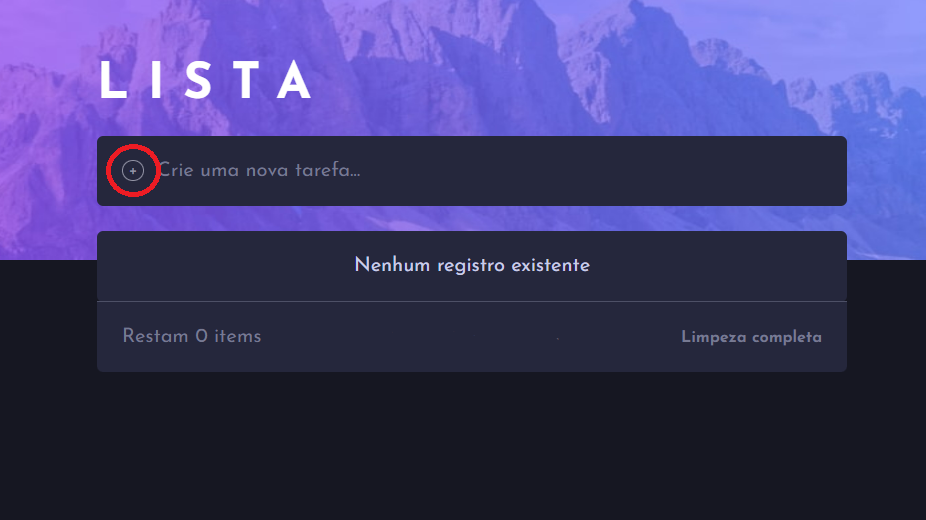
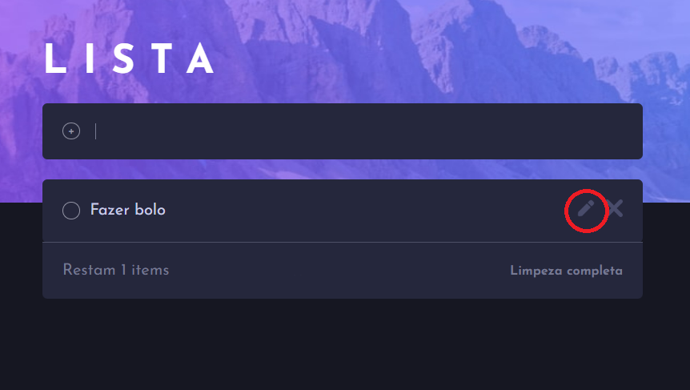
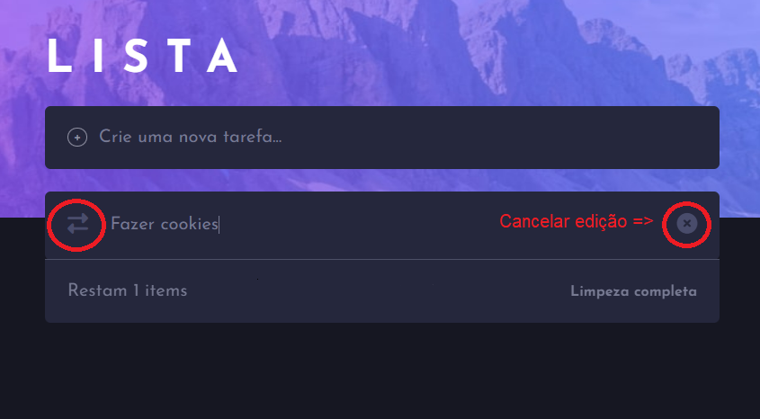
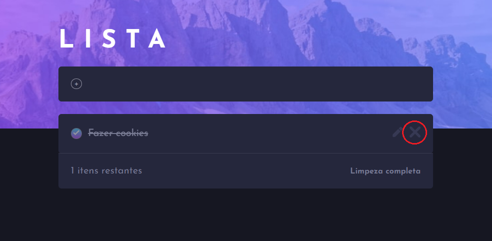

Adicionar
Escreva a sua tarefa ou ação que gostaria de desenvolver e clique no botão de "+":

Editar
Clique no lápis para editar e depois no texto de sua tarefa. Ao terminar apenas clique no icone à direita ou em "enter". Mas caso mude de ideia, apenas clique no "x":


Excluir
Não quer mais a tarefa, aperte no x como mostrado à baixo. Quer apagar todas as tarefas? Clique em "Limpeza completa"
